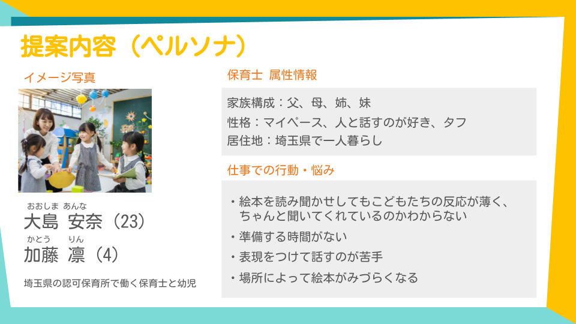
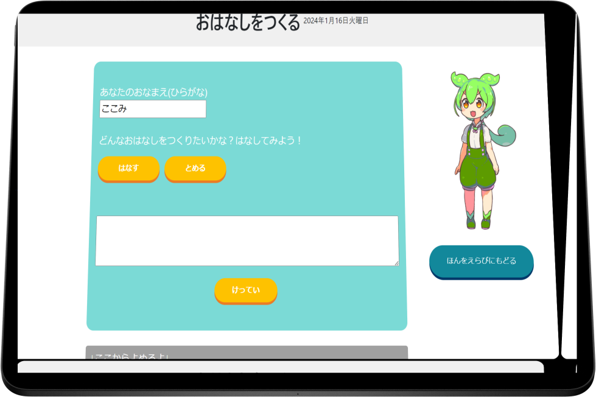
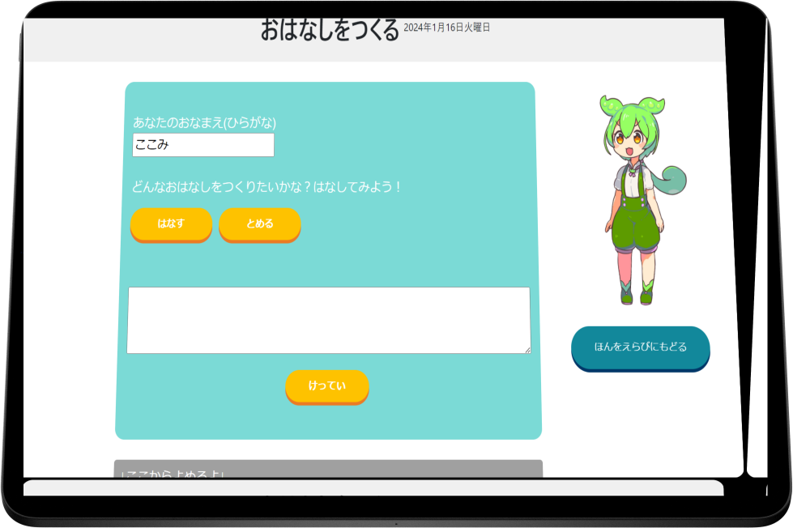

Work
絵本の読み聞かせで非認知能力をのばす
おはなしパレット
UI/UX, Programming
メンバー
情報連携実習3
担当
UI/UX, Front end programming
制作期間
7か月
使用ツール
Figma, HTML, CSS, JS
今までとは異なる、新しい絵本読み聞かせ体験


- 読み上げてくれる音声機能付き！
- 質問機能があって子どもたちと対話できる
- 月齢や年齢に合わせた絵本をつくれる！
制作過程
1.リサーチで「幼児から非認知能力を上げることの大切さ」に気づく
情報連携実習3ではチーム内でスケジュールや役割分担を話し合いながら決めています。 私は学部で学んだUXデザインの考え方を実践すべく、ユーザーリサーチを入念に行いました。
非認知能力とは、「物事に対する考え方、取り組む姿勢、行動など日常生活・社会活動において重要な影響を及ぼす能力」を指しています。
このプロジェクトにおける目的は2つです。一つ目は幼児の非認知能力を上げること。
そして二つ目は幼児のコミュニケーション力を上げることです。
日本学生支援機構による調査では、「学校内で対人関係に関する相談が多い」という現状があります。 学生たちは自分の心や相手の気持ちを想像し、理解することができていないのではないかと 私たちは考えました。特にコミュニケーション力や主体性といった非認知能力が関連しているのではないかと 仮説を立てています。さらに調査を進めたところ、就学前から非認知能力を身につけておくほうが、その人の幸福度が上がるという データが見つかりました。
そこで対人関係スキルの向上を幼児教育の一環として捉え、ターゲットユーザーを4～5歳の幼児にしました。
-
参考文献
- https://www.mext.go.jp/b_menu/shingi/chousa/shotou/075/shiryo/__icsFiles/afieldfile/2010/06/22/1294462_03.pdf
- https://berd.benesse.jp/jisedai/research/detail1.php?id=5784
▼
2.コンセプトは「アウトプットを重視した、絵本読み聞かせWebアプリ」
子供に読み聞かせを行うとき、日本では大人が一方的に文章を読み進めるおだやかな雰囲気があります。 しかし、アメリカでは親子が対話をしながら絵本を読み進めています。例えばお話の途中に質問を挟むことで 子どもに問いかけることができます。このやり方で進めると、思考力や読解力、説明力などの 言語能力を伸ばせることが分かりました。
ただ今回のプロジェクトの利用シーンとしては保育所や幼稚園などを提案しています。 対話型の読み聞かせは脳を活性化させるため、就寝前の読み聞かせ利用が多い家庭では 保護者があまり体験を魅力に感じないのではないかと想定されるからです。また、令和4年度の 調査では、認可保育所によって絵本蔵数の格差があることや保育所の経営予算が不十分であること、保育士の人手不足 などの課題が多く残っている現状から、需要があると判断しました。
よって、改めてターゲットユーザーを幼児と保育士と定義しなおしました。ペルソナは「絵本の読み聞かせに不安を感じている新入り保育士」 と「絵本読み聞かせ時に反応が薄い4～5歳児」とします。
.png)
-
参考文献
- https://cedep.meclib.jp/popular_leaflet_02/book/data/all_page.pdf
▼
3.異なる専門分野の学生と連携しながら開発を進める
絵本読み聞かせWebアプリには、3つの機能があります。一つ目は音声機能です。

有名な日本昔話やChatGPTで生成した新しいおはなしの計5つありますが、すべてその場で再生できます。 ペルソナの悩みとして「読み聞かせのスキル不足による不安」があり、特に「抑揚やイントネーションを工夫するスキル」が求められていると分かりました。 しかし音声機能がついているため、保育士は安心して子供たちの反応をみることに集中できると考えます。
二つ目は質問機能、三つ目はおはなし作成機能です。
 

質問内容はChatGPTを利用して作成し、音声で読み上げられます。おはなし作成機能にも ChatGPTが利用されており、おはなしの続きや新しい物語など要望に応えてくれます。
このプロジェクトには、エンジニアリングやビジネスを専攻とするメンバーがいます。そのため、お互いの考え方や 得意・不得意を話し合いながら役割分担を決めました。私はフロントエンドのデザインと実装を担当し、ペルソナをふまえて、子どもが思わず目を引くポップさ表現しようと色とアニメーションで工夫しました。 また保育士の操作性も考慮して一クリックで飛べるようにしています。
▼
4.今後は、幼児の子を持つ家族や保育士に評価してもらい、機能の改善を続ける
.png)
このように私たちは幼児の非認知能力を向上するアイデアとしてこの「おはなしパレット」を提案しますが、 本当にペルソナが満足する体験なのか、また画面操作においてユーザビリティが優れているのかを客観的に評価する必要があります。 SD法や評定法を用いた質問紙調査や、実際に保育所での利用体験をしていただく実験観察インタビューを検討し、分析したいと考えています。